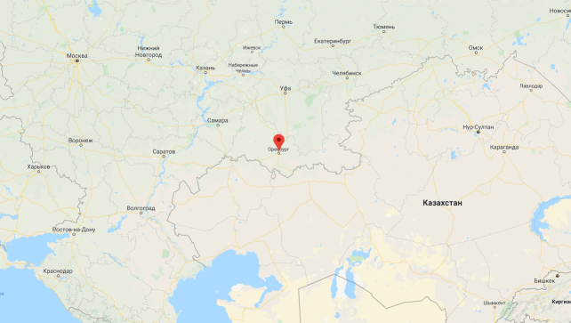
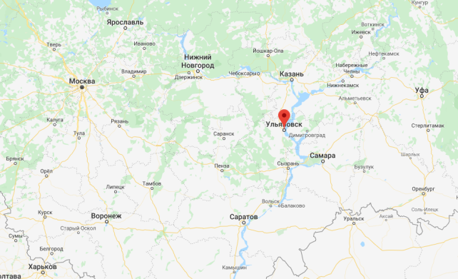

Evaluation Warning: The document was created with Spire.Doc for .NET.
Спасибо, что скачали книгу в бесплатной электронной библиотеке Royallib.ru
Эта же книга в других форматах
Приятного чтения!
Дата файла: 29.12.2019
Оглавление
Береги честь смолоду.
Пословица
– Был бы гвардии он завтра ж капитан.
– Того не надобно; пусть в армии послужит.
– Изрядно сказано! пускай его потужит…
………………………………………………………
Да кто его отец?
Отец мой, Андрей Петрович Гринев, в молодости своей служил при графе Минихе и вышел в отставку премьер-майором в 17… году. С тех пор жил он в своей Симбирской деревне, где и женился на девице Авдотье Васильевне Ю., дочери бедного тамошнего дворянина. Нас было девять человек детей. Все мои братья и сестры умерли во младенчестве.
Матушка была еще мною брюхата, как уже я был записан в Семеновский полк сержантом, по милости майора гвардии князя Б., близкого нашего родственника. Если б паче всякого чаяния матушка родила дочь, то батюшка объявил бы куда следовало о смерти неявившегося сержанта, и дело тем бы и кончилось. Я считался в отпуску до окончания наук. В то время воспитывались мы не по-нонешнему. С пятилетнего возраста отдан я был на руки стремянному Савельичу, за трезвое поведение пожалованному мне в дядьки. Под его надзором на двенадцатом году выучился я русской грамоте и мог очень здраво судить о свойствах борзого кобеля. В это время батюшка нанял для меня француза, мосье Бопре, которого выписали из Москвы вместе с годовым запасом вина и прованского масла. Приезд его сильно не понравился Савельичу. «Слава богу, – ворчал он про себя, – кажется, дитя умыт, причесан, накормлен. Куда как нужно тратить лишние деньги и нанимать мусье, как будто и своих людей не стало!»
Бопре в отечестве своем был парикмахером, потом в Пруссии солдатом, потом приехал в Россию pour être outchitel, не очень понимая значение этого слова. Он был добрый малый, но ветрен и беспутен до крайности. Главною его слабостию была страсть к прекрасному полу; нередко за свои нежности получал он толчки, от которых охал по целым суткам. К тому же не был он (по его выражению) и врагом бутылки, то есть (говоря по-русски) любил хлебнуть лишнее. Но как вино подавалось у нас только за обедом, и то по рюмочке, причем учителя обыкновенно и обносили, то мой Бопре очень скоро привык к русской настойке и даже стал предпочитать ее винам своего отечества, как не в пример более полезную для желудка. Мы тотчас поладили, и, хотя по контракту обязан он был учить меня по-французски, по-немецки и всем наукам, но он предпочел наскоро выучиться от меня кое-как болтать по-русски, – и потом каждый из нас занимался уже своим делом. Мы жили душа в душу. Другого ментора я и не желал. Но вскоре судьба нас разлучила, и вот по какому случаю.
Прачка Палашка, толстая и рябая девка, и кривая коровница Акулька как-то согласились в одно время кинуться матушке в ноги, винясь в преступной слабости и с плачем жалуясь на мусье, обольстившего их неопытность. Матушка шутить этим не любила и пожаловалась батюшке. У него расправа была коротка. Он тотчас потребовал каналью француза. Доложили, что мусье давал мне свой урок. Батюшка пошел в мою комнату. В это время Бопре спал на кровати сном невинности. Я был занят делом. Надобно знать, что для меня выписана была из Москвы географическая карта. Она висела на стене безо всякого употребления и давно соблазняла меня шириною и добротою бумаги. Я решился сделать из нее змей и, пользуясь сном Бопре, принялся за работу. Батюшка вошел в то самое время, как я прилаживал мочальный (?) хвост к Мысу Доброй Надежды. Увидя мои упражнения в географии, батюшка дернул меня за ухо, потом подбежал к Бопре, разбудил его очень неосторожно и стал осыпать укоризнами. Бопре в смятении хотел было привстать и не мог: несчастный француз был мертво пьян. Семь бед, один ответ. Батюшка за ворот приподнял его с кровати, вытолкал из дверей и в тот же день прогнал со двора, к неописанной радости Савельича. Тем и кончилось мое воспитание.
Я жил недорослем, гоняя голубей и играя в чехарду с дворовыми мальчишками. Между тем минуло мне шестнадцать лет. Тут судьба моя переменилась.
Однажды осенью матушка варила в гостиной медовое варенье, а я, облизываясь, смотрел на кипучие пенки. Батюшка у окна читал Придворный календарь, ежегодно им получаемый. Эта книга имела всегда сильное на него влияние: никогда не перечитывал он ее без особенного участия, и чтение это производило в нем всегда удивительное волнение желчи. Матушка, знавшая наизусть все его свычаи и обычаи, всегда старалась засунуть несчастную книгу как можно подалее, и таким образом Придворный календарь не попадался ему на глаза иногда по целым месяцам. Зато, когда он случайно его находил, то, бывало, по целым часам не выпускал уж из своих рук. Итак, батюшка читал Придворный календарь, изредка пожимая плечами и повторяя вполголоса: «Генерал-поручик!.. Он у меня в роте был сержантом!.. Обоих российских орденов кавалер!.. А давно ли мы…». Наконец батюшка швырнул календарь на диван и погрузился в задумчивость, не предвещавшую ничего доброго.
Вдруг он обратился к матушке: «Авдотья Васильевна, а сколько лет Петруше?»
– Да вот пошел семнадцатый годок, – отвечала матушка. – Петруша родился в тот самый год, как окривела тетушка Настасья Герасимовна, и когда еще…
«Добро, – прервал батюшка, – пора его в службу. Полно ему бегать по девичьим да лазить на голубятни».
Мысль о скорой разлуке со мною так поразила матушку, что она уронила ложку в кастрюльку и слезы потекли по ее лицу. Напротив того, трудно описать мое восхищение. Мысль о службе сливалась во мне с мыслями о свободе, об удовольствиях петербургской жизни. Я воображал себя офицером гвардии, что, по мнению моему, было верхом благополучия человеческого.
Батюшка не любил ни переменять свои намерения, ни откладывать их исполнение. День отъезду моему был назначен. Накануне батюшка объявил, что намерен писать со мною к будущему моему начальнику, и потребовал пера и бумаги.
– Не забудь, Андрей Петрович, – сказала матушка, – поклониться и от меня князю Б.; я, дескать, надеюсь, что он не оставит Петрушу своими милостями.
– Что за вздор! – отвечал батюшка нахмурясь. – К какой стати стану я писать к князю Б.?
– Да ведь ты сказал, что изволишь писать к начальнику Петруши.
– Ну, а там что?
– Да ведь начальник Петрушин – князь Б. Ведь Петруша записан в Семеновский полк.
– Записан! А мне какое дело, что он записан? Петруша в Петербург не поедет. Чему научится он, служа в Петербурге? мотать да повесничать? Нет, пускай послужит он в армии, да потянет лямку, да понюхает пороху, да будет солдат, а не шаматон. Записан в гвардии! Где его пашпорт? подай его сюда.
Матушка отыскала мой паспорт, хранившийся в ее шкатулке вместе с сорочкою, в которой меня крестили, и вручила его батюшке дрожащею рукою. Батюшка прочел его со вниманием, положил перед собою на стол и начал свое письмо.
Любопытство меня мучило: куда ж отправляют меня, если уж не в Петербург? Я не сводил глаз с пера батюшкина, которое двигалось довольно медленно. Наконец он кончил, запечатал письмо в одном пакете с паспортом, снял очки и, подозвав меня, сказал: «Вот тебе письмо к Андрею Карловичу Р., моему старинному товарищу и другу. Ты едешь в Оренбург служить под его начальством».
Итак, все мои блестящие надежды рушились! Вместо веселой петербургской жизни ожидала меня скука в стороне глухой и отдаленной. Служба, о которой за минуту думал я с таким восторгом, показалась мне тяжким несчастьем. Но спорить было нечего! На другой день поутру подвезена была к крыльцу дорожная кибитка; уложили в нее чемодан, погребец с чайным прибором и узлы с булками и пирогами, последними знаками домашнего баловства. Родители мои благословили меня. Батюшка сказал мне: «Прощай, Петр. Служи верно, кому присягнешь; слушайся начальников; за их лаской не гоняйся; на службу не напрашивайся; от службы не отговаривайся; и помни пословицу: береги платье снову, а честь смолоду». Матушка в слезах наказывала мне беречь мое здоровье, а Савельичу смотреть за дитятей. Надели на меня заячий тулуп, а сверху лисью шубу. Я сел в кибитку с Савельичем и отправился в дорогу, обливаясь слезами.
В ту же ночь приехал я в Симбирск, где должен был пробыть сутки для закупки нужных вещей, что и было поручено Савельичу. Я остановился в трактире. Савельич с утра отправился по лавкам. Соскуча глядеть из окна на грязный переулок, я пошел бродить по всем комнатам. Вошед в биллиардную, увидел я высокого барина, лет тридцати пяти, с длинными черными усами, в халате, с кием в руке и с трубкой в зубах. Он играл с маркером, который при выигрыше выпивал рюмку водки, а при проигрыше должен был лезть под биллиард на четверинках. Я стал смотреть на их игру. Чем долее она продолжалась, тем прогулки на четверинках становились чаще, пока, наконец, маркер остался под биллиардом. Барин произнес над ним несколько сильных выражений в виде надгробного слова и предложил мне сыграть партию. Я отказался по неумению. Это показалось ему, по-видимому, странным. Он поглядел на меня как бы с сожалением; однако мы разговорились. Я узнал, что его зовут Иваном Ивановичем Зуриным, что он ротмистр ** гусарского полку и находится в Симбирске при приеме рекрут, а стоит в трактире. Зурин пригласил меня отобедать с ним вместе чем бог послал, по-солдатски. Я с охотою согласился. Мы сели за стол. Зурин пил много и потчевал и меня, говоря, что надобно привыкать ко службе; он рассказывал мне армейские анекдоты, от которых я со смеху чуть не валялся, и мы встали из-за стола совершенными приятелями. Тут вызвался он выучить меня играть на биллиарде. «Это, – говорил он, – необходимо для нашего брата служивого. В походе, например, придешь в местечко – чем прикажешь заняться? Ведь не все же бить жидов. Поневоле пойдешь в трактир и станешь играть на биллиарде; а для того надобно уметь играть!» Я совершенно был убежден и с большим прилежанием принялся за учение. Зурин громко ободрял меня, дивился моим быстрым успехам и, после нескольких уроков, предложил мне играть в деньги, по одному грошу, не для выигрыша, а так, чтоб только не играть даром, что, по его словам, самая скверная привычка. Я согласился и на то, а Зурин велел подать пуншу и уговорил меня попробовать, повторяя, что к службе надобно мне привыкать; а без пуншу, что и служба! Я послушался его. Между тем игра наша продолжалась. Чем чаще прихлебывал я от моего стакана, тем становился отважнее. Шары поминутно летали у меня через борт; я горячился, бранил маркера, который считал бог ведает как, час от часу умножал игру, словом – вел себя как мальчишка, вырвавшийся на волю. Между тем время прошло незаметно. Зурин взглянул на часы, положил кий и объявил мне, что я проиграл сто рублей. Это меня немножко смутило. Деньги мои были у Савельича. Я стал извиняться. Зурин меня прервал: «Помилуй! Не изволь и беспокоиться. Я могу и подождать, а покамест поедем к Аринушке».
Что прикажете? День я кончил так же беспутно, как и начал. Мы отужинали у Аринушки. Зурин поминутно мне подливал, повторяя, что надобно к службе привыкать. Встав из-за стола, я чуть держался на ногах; в полночь Зурин отвез меня в трактир.
Савельич встретил нас на крыльце. Он ахнул, увидя несомненные признаки моего усердия к службе. «Что это, сударь, с тобою сделалось? – сказал он жалким голосом, – где ты это нагрузился? Ахти господи! отроду такого греха не бывало!» – «Молчи, хрыч! – отвечал я ему, запинаясь, – ты, верно, пьян, пошел спать… и уложи меня».
На другой день я проснулся с головною болью, смутно припоминая себе вчерашние происшествия. Размышления мои прерваны были Савельичем, вошедшим ко мне с чашкою чая. «Рано, Петр Андреич, – сказал он мне, качая головою, – рано начинаешь гулять. И в кого ты пошел? Кажется, ни батюшка, ни дедушка пьяницами не бывали; о матушке и говорить нечего: отроду, кроме квасу, в рот ничего не изволила брать. А кто всему виноват? проклятый мусье. То и дело, бывало, к Антипьевне забежит: „Мадам, же ву при, водкю“. Вот тебе и же ву при! Нечего сказать: добру наставил, собачий сын. И нужно было нанимать в дядьки басурмана, как будто у барина не стало и своих людей!»
Мне было стыдно. Я отвернулся и сказал ему: «Поди вон, Савельич; я чаю не хочу». Но Савельича мудрено было унять, когда, бывало, примется за проповедь. «Вот видишь ли, Петр Андреич, каково подгуливать. И головке-то тяжело, и кушать-то не хочется. Человек пьющий ни на что не годен… Выпей-ка огуречного рассолу с медом, а всего бы лучше опохмелиться полстаканчиком настойки. Не прикажешь ли?»
В это время мальчик вошел и подал мне записку от И. И. Зурина. Я развернул ее и прочел следующие строки:
«Любезный Петр Андреевич, пожалуйста, пришли мне с моим мальчиком сто рублей, которые ты мне вчера проиграл. Мне крайняя нужда в деньгах.
Готовый ко услугам
Иван Зурин».
Делать было нечего. Я взял на себя вид равнодушный и, обратясь к Савельичу, который был и денег, и белья, и дел моих рачитель, приказал отдать мальчику сто рублей. «Как! зачем?» – спросил изумленный Савельич. «Я их ему должен», – отвечал я со всевозможной холодностию. «Должен! – возразил Савельич, час от часу приведенный в большее изумление, – да когда же, сударь, успел ты ему задолжать? Дело что-то не ладно. Воля твоя, сударь, а денег я не выдам».
Я подумал, что если в сию решительную минуту не переспорю упрямого старика, то уж в последствии времени трудно мне будет освободиться от его опеки, и, взглянув на него гордо, сказал: «Я твой господин, а ты мой слуга. Деньги мои. Я их проиграл, потому что так мне вздумалось. А тебе советую не умничать и делать то, что тебе приказывают».
Савельич так был поражен моими словами, что сплеснул руками и остолбенел. «Что же ты стоишь!» – закричал я сердито. Савельич заплакал. «Батюшка Петр Андреич, – произнес он дрожащим голосом, – не умори меня с печали. Свет ты мой! послушай меня, старика: напиши этому разбойнику, что ты пошутил, что у нас и денег-то таких не водится. Сто рублей! Боже ты милостивый! Скажи, что тебе родители крепко-накрепко заказали не играть, окроме как в орехи…» – «Полно врать, – прервал я строго, – подавай сюда деньги или я тебя взашеи прогоню».
Савельич поглядел на меня с глубокой горестью и пошел за моим долгом. Мне было жаль бедного старика; но я хотел вырваться на волю и доказать, что уж я не ребенок. Деньги были доставлены Зурину. Савельич поспешил вывезти меня из проклятого трактира. Он явился с известием, что лошади готовы. С неспокойной совестию и с безмолвным раскаянием выехал я из Симбирска, не простясь с моим учителем и не думая с ним уже когда-нибудь увидеться.
Сторона ль моя, сторонушка,
Сторона незнакомая!
Что не сам ли я на тебя зашел,
Что не добрый ли да меня конь завез:
Завезла меня, доброго молодца,
Прытость, бодрость молодецкая
И хмелинушка кабацкая.
Старинная песня
Дорожные размышления мои были не очень приятны. Проигрыш мой, по тогдашним ценам, был немаловажен. Я не мог не признаться в душе, что поведение мое в симбирском трактире было глупо, и чувствовал себя виноватым перед Савельичем. Все это меня мучило. Старик угрюмо сидел на облучке, отворотясь от меня, и молчал, изредка только покрякивая. Я непременно хотел с ним помириться и не знал с чего начать. Наконец я сказал ему: «Ну, ну, Савельич! полно, помиримся, виноват; вижу сам, что виноват. Я вчера напроказил, а тебя напрасно обидел. Обещаюсь вперед вести себя умнее и слушаться тебя. Ну, не сердись; помиримся».
– Эх, батюшка Петр Андреич! – отвечал он с глубоким вздохом. – Сержусь-то я на самого себя; сам я кругом виноват. Как мне было оставлять тебя одного в трактире! Что делать? Грех попутал: вздумал забрести к дьячихе, повидаться с кумою. Так-то: зашел к куме, да засел в тюрьме. Беда да и только! Как покажусь я на глаза господам? что скажут они, как узнают, что дитя пьет и играет.
Чтоб утешить бедного Савельича, я дал ему слово впредь без его согласия не располагать ни одною копейкою. Он мало-помалу успокоился, хотя все еще изредка ворчал про себя, качая головою: «Сто рублей! легко ли дело!»
Я приближался к месту моего назначения. Вокруг меня простирались печальные пустыни, пересеченные холмами и оврагами. Все покрыто было снегом. Солнце садилось. Кибитка ехала по узкой дороге, или точнее по следу, проложенному крестьянскими санями. Вдруг ямщик стал посматривать в сторону и, наконец, сняв шапку, оборотился ко мне и сказал: «Барин, не прикажешь ли воротиться?»
– Это зачем?
– Время ненадежно: ветер слегка подымается; вишь, как он сметает порошу.
– Что ж за беда!
– А видишь там что? (Ямщик указал кнутом на восток.)
– Я ничего не вижу, кроме белой степи да ясного неба.
– А вон – вон: это облачко.
Я увидел в самом деле на краю неба белое облачко, которое принял было сперва за отдаленный холмик. Ямщик изъяснил мне, что облачко предвещало буран.
Я слыхал о тамошних метелях и знал, что целые обозы бывали ими занесены. Савельич, согласно со мнением ямщика, советовал воротиться. Но ветер показался мне не силен; я понадеялся добраться заблаговременно до следующей станции и велел ехать скорее.
Ямщик поскакал; но все поглядывал на восток. Лошади бежали дружно. Ветер между тем час от часу становился сильнее. Облачко обратилось в белую тучу, которая тяжело подымалась, росла и постепенно облегала небо. Пошел мелкий снег – и вдруг повалил хлопьями. Ветер завыл; сделалась метель. В одно мгновение темное небо смешалось со снежным морем. Все исчезло. «Ну, барин, – закричал ямщик, – беда: буран!..»
Я выглянул из кибитки: все было мрак и вихорь. Ветер выл с такой свирепой выразительностию, что казался одушевленным; снег засыпал меня и Савельича; лошади шли шагом – и скоро стали. «Что же ты не едешь?» – спросил я ямщика с нетерпением. «Да что ехать? – отвечал он, слезая с облучка, – невесть и так куда заехали: дороги нет, и мгла кругом». Я стал было его бранить. Савельич за него заступился: «И охота было не слушаться, – говорил он сердито, – воротился бы на постоялый двор, накушался бы чаю, почивал бы себе до утра, буря б утихла, отправились бы далее. И куда спешим? Добро бы на свадьбу!» Савельич был прав. Делать было нечего. Снег так и валил. Около кибитки подымался сугроб. Лошади стояли, понуря голову и изредка вздрагивая. Ямщик ходил кругом, от нечего делать улаживая упряжь. Савельич ворчал; я глядел во все стороны, надеясь увидеть хоть признак жила или дороги, но ничего не мог различить, кроме мутного кружения метели… Вдруг увидел я что-то черное. «Эй, ямщик! – закричал я, – смотри: что там такое чернеется?» Ямщик стал всматриваться. «А бог знает, барин, – сказал он, садясь на свое место, – воз не воз, дерево не дерево, а кажется, что шевелится. Должно быть, или волк, или человек». Я приказал ехать на незнакомый предмет, который тотчас и стал подвигаться нам навстречу. Через две минуты мы поровнялись с человеком. «Гей, добрый человек! – закричал ему ямщик. – Скажи, не знаешь ли, где дорога?»
– Дорога-то здесь; я стою на твердой полосе, – отвечал дорожный, – да что толку?
– Послушай, мужичок, – сказал я ему, – знаешь ли ты эту сторону? Возьмешься ли ты довести меня до ночлега?
– Сторона мне знакомая, – отвечал дорожный, – слава богу, исхожена и изъезжена вдоль и поперек. Да вишь какая погода: как раз собьешься с дороги. Лучше здесь остановиться да переждать, авось буран утихнет да небо прояснится: тогда найдем дорогу по звездам.
Его хладнокровие ободрило меня. Я уж решился, предав себя божией воле, ночевать посреди степи, как вдруг дорожный сел проворно на облучок и сказал ямщику: «Ну, слава богу, жило недалеко; сворачивай вправо да поезжай».
– А почему ехать мне вправо? – спросил ямщик с неудовольствием. – Где ты видишь дорогу? Небось: лошади чужие, хомут не свой, погоняй не стой. – Ямщик казался мне прав. «В самом деле, – сказал я, – почему думаешь ты, что жило недалече?» – «А потому, что ветер оттоле потянул, – отвечал дорожный, – и я слышу, дымом пахнуло; знать, деревня близко». Сметливость его и тонкость чутья меня изумили. Я велел ямщику ехать. Лошади тяжело ступали по глубокому снегу. Кибитка тихо подвигалась, то въезжая на сугроб, то обрушаясь в овраг и переваливаясь то на одну, то на другую сторону. Это похоже было на плавание судна по бурному морю. Савельич охал, поминутно толкаясь о мои бока. Я опустил циновку, закутался в шубу и задремал, убаюканный пением бури и качкою тихой езды.
Мне приснился сон, которого никогда не мог я позабыть и в котором до сих пор вижу нечто пророческое, когда соображаю с ним странные обстоятельства моей жизни. Читатель извинит меня: ибо, вероятно, знает по опыту, как сродно человеку предаваться суеверию, несмотря на всевозможное презрение к предрассудкам.
Я находился в том состоянии чувств и души, когда существенность, уступая мечтаниям, сливается с ними в неясных видениях первосония. Мне казалось, буран еще свирепствовал и мы еще блуждали по снежной пустыне… Вдруг увидел я ворота и въехал на барский двор нашей усадьбы. Первою мыслию моею было опасение, чтоб батюшка не прогневался на меня за невольное возвращение под кровлю родительскую и не почел бы его умышленным ослушанием. С беспокойством я выпрыгнул из кибитки и вижу: матушка встречает меня на крыльце с видом глубокого огорчения. «Тише, – говорит она мне, – отец болен при смерти и желает с тобою проститься». Пораженный страхом, я иду за нею в спальню. Вижу, комната слабо освещена; у постели стоят люди с печальными лицами. Я тихонько подхожу к постеле; матушка приподымает полог и говорит: «Андрей Петрович, Петруша приехал; он воротился, узнав о твоей болезни; благослови его». Я стал на колени и устремил глаза мои на больного. Что ж?.. Вместо отца моего, вижу в постеле лежит мужик с черной бородою, весело на меня поглядывая. Я в недоумении оборотился к матушке, говоря ей: «Что это значит? Это не батюшка. И к какой мне стати просить благословения у мужика?» – «Все равно, Петруша, – отвечала мне матушка, – это твой посаженый отец; поцелуй у него ручку, и пусть он тебя благословит…» Я не соглашался. Тогда мужик вскочил с постели, выхватил топор из-за спины и стал махать во все стороны. Я хотел бежать… и не мог; комната наполнилась мертвыми телами; я спотыкался о тела и скользил в кровавых лужах… Страшный мужик ласково меня кликал, говоря: «Не бойсь, подойди под мое благословение…» Ужас и недоумение овладели мною… И в эту минуту я проснулся; лошади стояли; Савельич дергал меня за руку, говоря: «Выходи, сударь: приехали».
– Куда приехали? – спросил я, протирая глаза.
– На постоялый двор. Господь помог, наткнулись прямо на забор. Выходи, сударь, скорее да обогрейся.
Я вышел из кибитки. Буран еще продолжался, хотя с меньшею силою. Было так темно, что хоть глаз выколи. Хозяин встретил нас у ворот, держа фонарь под полою, и ввел меня в горницу, тесную, но довольно чистую; лучина освещала ее. На стене висела винтовка и высокая казацкая шапка.
Хозяин, родом яицкий казак, казался мужик лет шестидесяти, еще свежий и бодрый. Савельич внес за мною погребец, потребовал огня, чтоб готовить чай, который никогда так не казался мне нужен. Хозяин пошел хлопотать.
– Где же вожатый? – спросил я у Савельича. «Здесь, ваше благородие», – отвечал мне голос сверху. Я взглянул на полати и увидел черную бороду и два сверкающие глаза. «Что, брат, прозяб?» – «Как не прозябнуть в одном худеньком армяке! Был тулуп, да что греха таить? заложил вечор у целовальника: мороз показался не велик». В эту минуту хозяин вошел с кипящим самоваром; я предложил вожатому нашему чашку чаю; мужик слез с полатей. Наружность его показалась мне замечательна: он был лет сорока, росту среднего, худощав и широкоплеч. В черной бороде его показывалась проседь; живые большие глаза так и бегали. Лицо его имело выражение довольно приятное, но плутовское. Волоса были обстрижены в кружок; на нем был оборванный армяк и татарские шаровары. Я поднес ему чашку чаю; он отведал и поморщился. «Ваше благородие, сделайте мне такую милость, – прикажите поднести стакан вина; чай не наше казацкое питье». Я с охотой исполнил его желание. Хозяин вынул из ставца штоф и стакан, подошел к нему и, взглянув ему в лицо: «Эхе, – сказал он, – опять ты в нашем краю! Отколе бог принес?» Вожатый мой мигнул значительно и отвечал поговоркою: «В огород летал, конопли клевал; швырнула бабушка камушком – да мимо. Ну, а что ваши?»
– Да что наши! – отвечал хозяин, продолжая иносказательный разговор. – Стали было к вечерне звонить, да попадья не велит: поп в гостях, черти на погосте.
«Молчи, дядя, – возразил мой бродяга, – будет дождик, будут и грибки; а будут грибки, будет и кузов. А теперь (тут он мигнул опять) заткни топор за спину: лесничий ходит. Ваше благородие! за ваше здоровье!» – При сих словах он взял стакан, перекрестился и выпил одним духом. Потом поклонился мне и воротился на полати.
Я ничего не мог тогда понять из этого воровского разговора; но после уж догадался, что дело шло о делах Яицкого войска, в то время только что усмиренного после бунта 1772 года. Савельич слушал с видом большого неудовольствия. Он посматривал с подозрением то на хозяина, то на вожатого. Постоялый двор, или, по-тамошнему, умет, находился в стороне, в степи, далече от всякого селения, и очень походил на разбойническую пристань. Но делать было нечего. Нельзя было и подумать о продолжении пути. Беспокойство Савельича очень меня забавляло. Между тем я расположился ночевать и лег на лавку. Савельич решился убраться на печь; хозяин лег на полу. Скоро вся изба захрапела, и я заснул как убитый.
Проснувшись поутру довольно поздно, я увидел, что буря утихла. Солнце сияло. Снег лежал ослепительной пеленою на необозримой степи. Лошади были запряжены. Я расплатился с хозяином, который взял с нас такую умеренную плату, что даже Савельич с ним не заспорил и не стал торговаться по своему обыкновению, и вчерашние подозрения изгладились совершенно из головы его. Я позвал вожатого, благодарил за оказанную помочь и велел Савельичу дать ему полтину на водку. Савельич нахмурился. «Полтину на водку! – сказал он, – за что это? За то, что ты же изволил подвезти его к постоялому двору? Воля твоя, сударь: нет у нас лишних полтин. Всякому давать на водку, так самому скоро придется голодать». Я не мог спорить с Савельичем. Деньги, по моему обещанию, находились в полном его распоряжении. Мне было досадно, однако ж, что не мог отблагодарить человека, выручившего меня если не из беды, то по крайней мере из очень неприятного положения. «Хорошо, – сказал я хладнокровно, – если не хочешь дать полтину, то вынь ему что-нибудь из моего платья. Он одет слишком легко. Дай ему мой заячий тулуп».
– Помилуй, батюшка Петр Андреич! – сказал Савельич. – Зачем ему твой заячий тулуп? Он его пропьет, собака, в первом кабаке.
– Это, старинушка, уж не твоя печаль, – сказал мой бродяга, – пропью ли я, или нет. Его благородие мне жалует шубу со своего плеча: его на то барская воля, а твое холопье дело не спорить и слушаться.
– Бога ты не боишься, разбойник! – отвечал ему Савельич сердитым голосом. – Ты видишь, что дитя еще не смыслит, а ты и рад его обобрать, простоты его ради. Зачем тебе барский тулупчик? Ты и не напялишь его на свои окаянные плечища.
– Прошу не умничать, – сказал я своему дядьке, – сейчас неси сюда тулуп.
– Господи владыко! – простонал мой Савельич. – Заячий тулуп почти новешенький! и добро бы кому, а то пьянице оголелому!
Однако заячий тулуп явился. Мужичок тут же стал его примеривать. В самом деле, тулуп, из которого успел и я вырасти, был немножко для него узок. Однако он кое-как умудрился и надел его, распоров по швам. Савельич чуть не завыл, услышав, как нитки затрещали. Бродяга был чрезвычайно доволен моим подарком. Он проводил меня до кибитки и сказал с низким поклоном: «Спасибо, ваше благородие! Награди вас господь за вашу добродетель. Век не забуду ваших милостей». – Он пошел в свою сторону, а я отправился далее, не обращая внимания на досаду Савельича, и скоро позабыл о вчерашней вьюге, о своем вожатом и о заячьем тулупе.
Приехав в Оренбург, я прямо явился к генералу. Я увидел мужчину росту высокого, но уже сгорбленного старостию. Длинные волосы его были совсем белы. Старый полинялый мундир напоминал воина времен Анны Иоанновны, а в его речи сильно отзывался немецкий выговор. Я подал ему письмо от батюшки. При имени его он взглянул на меня быстро: «Поже мой! – сказал он. – Тавно ли, кажется, Андрей Петрович был еше твоих лет, а теперь вот уш какой у него молотец! Ах, фремя, фремя!» Он распечатал письмо и стал читать его вполголоса, делая свои замечания. «Милостивый государь Андрей Карлович, надеюсь, что ваше превосходительство»… Это что за серемонии? Фуй, как ему не софестно! Конечно: дисциплина перво дело, но так ли пишут к старому камрад?.. «ваше превосходительство не забыло»… гм… «и… когда… покойным фельдмаршалом Мин… походе… также и… Каролинку»… Эхе, брудер! так он еше помнит стары наши проказ? «Теперь о деле… К вам моего повесу»… гм… «держать в ежовых рукавицах»… Что такое ешовы рукавиц? Это, должно быть, русска поговорк… Что такое «дершать в ешовых рукавицах»?» – повторил он, обращаясь ко мне.
– Это значит, – отвечал я ему с видом как можно более невинным, – обходиться ласково, не слишком строго, давать побольше воли, держать в ежовых рукавицах.
«Гм, понимаю… „и не давать ему воли“ – нет, видно, ешовы рукавицы значит не то… „При сем… его паспорт“… Где ж он? А, вот… „отписать в Семеновский“… Хорошо, хорошо: все будет сделано… „Позволишь без чинов обнять себя и… старым товарищем и другом“ – а! наконец догадался… и прочая и прочая… Ну, батюшка, – сказал он, прочитав письмо и отложив в сторону мой паспорт, – все будет сделано: ты будешь офицером переведен в *** полк, и чтоб тебе времени не терять, то завтра же поезжай в Белогорскую крепость, где ты будешь в команде капитана Миронова, доброго и честного человека. Там ты будешь на службе настоящей, научишься дисциплине. В Оренбурге делать тебе нечего; рассеяние вредно молодому человеку. А сегодня милости просим: отобедать у меня».
«Час от часу не легче! – подумал я про себя, – к чему послужило мне то, что еще в утробе матери я был уже гвардии сержантом! Куда это меня завело? В *** полк и в глухую крепость на границу киргиз-кайсацких степей!..» Я отобедал у Андрея Карловича, втроем с его старым адъютантом. Строгая немецкая экономия царствовала за его столом, и я думаю, что страх видеть иногда лишнего гостя за своею холостою трапезою был отчасти причиною поспешного удаления моего в гарнизон. На другой день я простился с генералом и отправился к месту моего назначения.
Мы в фортеции живем,
Хлеб едим и воду пьем;
А как лютые враги
Придут к нам на пироги,
Зададим гостям пирушку:
Зарядим картечью пушку.
Солдатская песня
Старинные люди, мой батюшка.
Недоросль
Белогорская крепость находилась в сорока верстах от Оренбурга. Дорога шла по крутому берегу Яика. Река еще не замерзала, и ее свинцовые волны грустно чернели в однообразных берегах, покрытых белым снегом. За ними простирались киргизские степи. Я погрузился в размышления, большею частию печальные. Гарнизонная жизнь мало имела для меня привлекательности. Я старался вообразить себе капитана Миронова, моего будущего начальника, и представлял его строгим, сердитым стариком, не знающим ничего, кроме своей службы, и готовым за всякую безделицу сажать меня под арест на хлеб и на воду. Между тем начало смеркаться. Мы ехали довольно скоро. «Далече ли до крепости?» – спросил я у своего ямщика. «Недалече, – отвечал он. – Вон уж видна». – Я глядел во все стороны, ожидая увидеть грозные бастионы, башни и вал; но ничего не видал, кроме деревушки, окруженной бревенчатым забором. С одной стороны стояли три или четыре скирда сена, полузанесенные снегом; с другой – скривившаяся мельница, с лубочными крыльями, лениво опущенными. «Где же крепость?» – спросил я с удивлением. «Да вот она», – отвечал ямщик, указывая на деревушку, и с этим словом мы в нее въехали. У ворот увидел я старую чугунную пушку; улицы были тесны и кривы; избы низки и большею частию покрыты соломою. Я велел ехать к коменданту, и через минуту кибитка остановилась перед деревянным домиком, выстроенным на высоком месте, близ деревянной же церкви.
Никто не встретил меня. Я пошел в сени и отворил дверь в переднюю. Старый инвалид, сидя на столе, нашивал синюю заплату на локоть зеленого мундира. Я велел ему доложить обо мне. «Войди, батюшка, – отвечал инвалид, – наши дома». Я вошел в чистенькую комнатку, убранную по-старинному. В углу стоял шкаф с посудой; на стене висел диплом офицерский за стеклом и в рамке; около него красовались лубочные картинки, представляющие взятие Кистрина и Очакова, также выбор невесты и погребение кота. У окна сидела старушка в телогрейке и с платком на голове. Она разматывала нитки, которые держал, распялив на руках, кривой старичок в офицерском мундире. «Что вам угодно, батюшка?» – спросила она, продолжая свое занятие. Я отвечал, что приехал на службу и явился по долгу своему к господину капитану, и с этим словом обратился было к кривому старичку, принимая его за коменданта; но хозяйка перебила затверженную мною речь. «Ивана Кузмича дома нет, – сказала она, – он пошел в гости к отцу Герасиму; да все равно, батюшка, я его хозяйка. Прошу любить и жаловать. Садись, батюшка». Она кликнула девку и велела ей позвать урядника. Старичок своим одиноким глазом поглядывал на меня с любопытством. «Смею спросить, – сказал он, – вы в каком полку изволили служить?» Я удовлетворил его любопытству. «А смею спросить, – продолжал он, – зачем изволили вы перейти из гвардии в гарнизон?» Я отвечал, что такова была воля начальства. «Чаятельно, за неприличные гвардии офицеру поступки», – продолжал неутомимый вопрошатель. «Полно врать пустяки, – сказала ему капитанша, – ты видишь, молодой человек с дороги устал; ему не до тебя… (держи-ка руки прямее…). А ты, мой батюшка, – продолжала она, обращаясь ко мне, – не печалься, что тебя упекли в наше захолустье. Не ты первый, не ты последний. Стерпится, слюбится. Швабрин Алексей Иваныч вот уж пятый год как к нам переведен за смертоубийство. Бог знает, какой грех его попутал; он, изволишь видеть, поехал за город с одним поручиком, да взяли с собою шпаги, да и ну друг в друга пырять; а Алексей Иваныч и заколол поручика, да еще при двух свидетелях! Что прикажешь делать? На грех мастера нет».
В эту минуту вошел урядник, молодой и статный казак. «Максимыч! – сказала ему капитанша. – Отведи господину офицеру квартиру, да почище». – «Слушаю, Василиса Егоровна, – отвечал урядник. – Не поместить ли его благородие к Ивану Полежаеву?» – «Врешь, Максимыч, – сказала капитанша, – у Полежаева и так тесно; он же мне кум и помнит, что мы его начальники. Отведи господина офицера… как ваше имя и отчество, мой батюшка? Петр Андреич?.. Отведи Петра Андреича к Семену Кузову. Он, мошенник, лошадь свою пустил ко мне в огород. Ну, что, Максимыч, все ли благополучно?»
– Все, слава богу, тихо, – отвечал казак, – только капрал Прохоров подрался в бане с Устиньей Негулиной за шайку горячей воды.
– Иван Игнатьич! – сказала капитанша кривому старичку. – Разбери Прохорова с Устиньей, кто прав, кто виноват. Да обоих и накажи. Ну, Максимыч, ступай себе с богом. Петр Андреич, Максимыч отведет вас на вашу квартиру.
Я откланялся. Урядник привел меня в избу, стоявшую на высоком берегу реки, на самом краю крепости. Половина избы занята была семьею Семена Кузова, другую отвели мне. Она состояла из одной горницы довольно опрятной, разделенной надвое перегородкой. Савельич стал в ней распоряжаться; я стал глядеть в узенькое окошко. Передо мною простиралась печальная степь. Наискось стояло несколько избушек; по улице бродило несколько куриц. Старуха, стоя на крыльце с корытом, кликала свиней, которые отвечали ей дружелюбным хрюканьем. И вот в какой стороне осужден я был проводить мою молодость! Тоска взяла меня; я отошел от окошка и лег спать без ужина, несмотря на увещания Савельича, который повторял с сокрушением: «Господи владыко! ничего кушать не изволит! Что скажет барыня, коли дитя занеможет?»
На другой день поутру я только что стал одеваться, как дверь отворилась, и ко мне вошел молодой офицер невысокого роста, с лицом смуглым и отменно некрасивым, но чрезвычайно живым. «Извините меня, – сказал он мне по-французски, – что я без церемонии прихожу с вами познакомиться. Вчера узнал я о вашем приезде; желание увидеть, наконец, человеческое лицо так овладело мною, что я не вытерпел. Вы это поймете, когда проживете здесь еще несколько времени». Я догадался, что это был офицер, выписанный из гвардии за поединок. Мы тотчас познакомились. Швабрин был очень не глуп. Разговор его был остер и занимателен. Он с большой веселостию описал мне семейство коменданта, его общество и край, куда завела меня судьба. Я смеялся от чистого сердца, как вошел ко мне тот самый инвалид, который чинил мундир в передней коменданта, и от имени Василисы Егоровны позвал меня к ним обедать. Швабрин вызвался идти со мною вместе.
Подходя к комендантскому дому, мы увидели на площадке человек двадцать стареньких инвалидов с длинными косами и в треугольных шляпах. Они выстроены были во фрунт. Впереди стоял комендант, старик бодрый и высокого росту, в колпаке и в китайчатом халате. Увидя нас, он к нам подошел, сказал мне несколько ласковых слов и стал опять командовать. Мы остановились было смотреть на учение; но он просил нас идти к Василисе Егоровне, обещаясь быть вслед за нами. «А здесь, – прибавил он, – нечего вам смотреть».
Василиса Егоровна приняла нас запросто и радушно и обошлась со мною как бы век была знакома. Инвалид и Палашка накрывали стол. «Что это мой Иван Кузмич сегодня так заучился! – сказала комендантша. – Палашка, позови барина обедать. Да где же Маша?» – Тут вошла девушка лет осьмнадцати, круглолицая, румяная, с светло-русыми волосами, гладко зачесанными за уши, которые у нее так и горели. С первого взгляда она не очень мне понравилась. Я смотрел на нее с предубеждением: Швабрин описал мне Машу, капитанскую дочь, совершенною дурочкою. Марья Ивановна села в угол и стала шить. Между тем подали щи. Василиса Егоровна, не видя мужа, вторично послала за ним Палашку. «Скажи барину: гости-де ждут, щи простынут; слава богу, ученье не уйдет; успеет накричаться». – Капитан вскоре явился, сопровождаемый кривым старичком. «Что это, мой батюшка? – сказала ему жена. – Кушанье давным-давно подано, а тебя не дозовешься». – «А слышь ты, Василиса Егоровна, – отвечал Иван Кузмич, – я был занят службой: солдатушек учил». – «И, полно! – возразила капитанша. – Только слава, что солдат учишь: ни им служба не дается, ни ты в ней толку не ведаешь. Сидел бы дома да богу молился; так было бы лучше. Дорогие гости, милости просим за стол».
Мы сели обедать. Василиса Егоровна не умолкала ни на минуту и осыпала меня вопросами: кто мои родители, живы ли они, где живут и каково их состояние? Услыша, что у батюшки триста душ крестьян, «легко ли! – сказала она, – ведь есть же на свете богатые люди! А у нас, мой батюшка, всего-то душ одна девка Палашка, да слава богу, живем помаленьку. Одна беда: Маша; девка на выданье, а какое у ней приданое? частый гребень, да веник, да алтын денег (прости бог!), с чем в баню сходить. Хорошо, коли найдется добрый человек; а то сиди себе в девках вековечной невестою». – Я взглянул на Марью Ивановну; она вся покраснела, и даже слезы капнули на ее тарелку. Мне стало жаль ее, и я спешил переменить разговор. «Я слышал, – сказал я довольно некстати, – что на вашу крепость собираются напасть башкирцы». – «От кого, батюшка, ты изволил это слышать?» – спросил Иван Кузмич. «Мне так сказывали в Оренбурге», – отвечал я. «Пустяки! – сказал комендант. – У нас давно ничего не слыхать. Башкирцы – народ напуганный, да и киргизцы проучены. Небось на нас не сунутся; а насунутся, так я такую задам острастку, что лет на десять угомоню». – «И вам не страшно, – продолжал я, обращаясь к капитанше, – оставаться в крепости, подверженной таким опасностям?» – «Привычка, мой батюшка, – отвечала она. – Тому лет двадцать как нас из полка перевели сюда, и не приведи господи, как я боялась проклятых этих нехристей! Как завижу, бывало, рысьи шапки, да как заслышу их визг, веришь ли, отец мой, сердце так и замрет! А теперь так привыкла, что и с места не тронусь, как придут нам сказать, что злодеи около крепости рыщут».
– Василиса Егоровна прехрабрая дама, – заметил важно Швабрин. – Иван Кузмич может это засвидетельствовать.
– Да, слышь ты, – сказал Иван Кузмич, – баба-то не робкого десятка.
– А Марья Ивановна? – спросил я, – так же ли смела, как и вы?
– Смела ли Маша? – отвечала ее мать. – Нет, Маша трусиха. До сих пор не может слышать выстрела из ружья: так и затрепещется. А как тому два года Иван Кузмич выдумал в мои именины палить из нашей пушки, так она, моя голубушка, чуть со страха на тот свет не отправилась. С тех пор уж и не палим из проклятой пушки.
Мы встали из-за стола. Капитан с капитаншею отправились спать; а я пошел к Швабрину, с которым и провел целый вечер.
1. Гвардия – специальные отборные войска. Первые гвардейские полки (Семеновский, Преображенский) появились в России при Петре I. В отличие от остального состава армии пользовались преимуществами.
2. Княжнин Я. Б. (1740–1791) – русский писатель, драматург.
3. Миних Б. Х. (1683–1767) – военачальник и политический деятель, командовал русскими войсками в войне с Турцией в 1735–1739 годах.
4. Премьер-майор – старинный офицерский чин (приблизительно соответствует должности командира батальона).
5. Тамошний – (разг.) находящийся, имеющийся там, в том месте, той местности.
6. Брюхатая – (устар.) женщина, находящаяся в состоянии беременности.
7. В XVIII веке дворянские дети с малых лет приписывались к какому-либо полку. Пока они росли, их повышали в чинах.
8. Паче чаяния – (устар.) вопреки ожиданию, сверх ожидания, неожиданно.
9. Стремянной – слуга, сопровождавший барина во время псовой охоты.
10. Дядька – слуга, приставленный к мальчику в дворянской семье.
11. Борзой кобель – группа пород охотничьих ловчих собак, для безружейной охоты (травли) на зверей.
12. Чтобы стать учителем. Русское слово учитель дано во французском написании для придания ему комического оттенка.
13. Толчок – действие по значению глагола толкать; резкий, толкающий удар.
14. Ментор – наставник, воспитатель.
16. Обольстить – (устар.) склонить к сожительству; соблазнить (женщину, девушку).
17. Каналья – (бранн., шутл.) мошенник, плут, бестия, пройдоха.
19. Семь бед — один ответ – говорится тогда, когда кто-либо, зная за собой какие-либо проступки, снова идет на риск, готовый отвечать за все сразу.
20. Недоросль –
· В XVIII в. в России: молодой дворянин, не достигший совершеннолетия и не поступивший ещё на государственную службу.
· (разг., ирон.) Глуповатый юноша-недоучка.
21. Чехарда — игра, участники которой поочерёдно прыгают через своих партнёров, стоящих в согнутом положении. Чехарда развивает ловкость, координацию движений, глазомер, смелость, уверенность и силу в руках и ногах.
23. Свычай – (устар.) привычка, обычай.
24. Генерал-поручик — воинский чин в Русской армии XVII — XVIII веков, а также воинское звание в армии Украинской Народной Республики и Украинской Национальной армии.
25. Кавалер ордена — титул лица, награждённого орденом В данном случае – кавалер орденов святого апостола Андрея Первозванного (учрежден в 1698 году) и Святого Александра Невского (учрежден в 1725 году).
26. Окриветь – косой, окосеть.
a. Собирать слухи и сплетни по девичьим.
b. Развлекаться, весело проводить время в компании женщин.
28. Дескать –
a. (разг.) Вводное слово для передачи чужой речи, прямой речи.
29. Мотать да повесничать – (разг.) ничего не делать и быть обузой, вести праздный образ жизни.
30. Тянуть лямку – усердно и добросовестно работать (как правило — за плату, недостаточную для такой работы).
31. Шаматон (разг., устар.) – гуляка, шалопай, бездельник.
32. Кибитка – крытая дорожная повозка.
33. Погребец (устар.) – дорожный сундучок для посуды и съестных припасов.
34. Береги платье снову, а часть смолоду – эта пословица употребляется в современной речи, чтобы подчеркнуть, что все действия, совершенные человеком, образуют его репутацию в обществе.
35. Трактир – устаревшее название гостиницы или постоялого двора с харчевней или рестораном, обычно дешёвого класса.
36. Маркер (фр.) – лицо, прислуживающее при бильярде.
37. Рекрут (устар.) – солдат-новобранец, лицо, только что призванное на военную службу. Здесь употребляется устарелая форма родительного падежа множественного числа (вместо рекрутов).
38. Чем Бог послал – тем, что имеется.
40. Жид – (бран.) скряга, живодёр, ростовщик.
41. Прилежание – усердие, старательность, добросовестное отношение к делу, работе.
42. Дивиться – приходить в удивление от кого-чего-нибудь.
43. Бранить – резко порицать, ругать.
44. Беспутно – ведя беспорядочный образ жизни, не имея какой либо цели; бессмысленно, безрассудно.
45. Сударыня, я вас прошу (фр.).
46. Басурман, басурманин (искаженное от «мусульманин») — обозначение человека иной (нехристианской) веры — неправославный, иноверец, иноземец, недоброжелатель, варвар.
47. И денег, и белья, и дел моих рачитель – цитата из стихотворения Д. И. Фонвизина «Послание к слугам моим». Рачитель (книжн., устар.) – человек, заботящийся о чем-либо, ведающий чем-либо.
48. Холодность – сухое, сдержанное обращение с кем-либо.
49. Прогнать взашей – прогнать кого взашей, вытолкать или выпроводить с бранью и угрозами.
50. Облучок – сиденье для кучера в повозке.
52. Соображаю – здесь: сопоставляю, согласую.
53. Целовальник (устар.) – продавец вина в питейных домах, кабаках.
54. Ставец (устар.) – высокий шкаф для посуды.
55. Штоф – бутыль (объемом 1/10 ведра).
56. Анна Иоанновна (1693–1740) – русская царица.
57. Кистрин (Кюстрин) – русская крепость. Очаков – турецкая крепость. Взяты русскими войсками; первая – в 1758 году, вторая – в 1737 году.
Рисунок 1 – местоположение Оренбурга на карте

Рисунок 2 – местоположение Симбирска на карте
